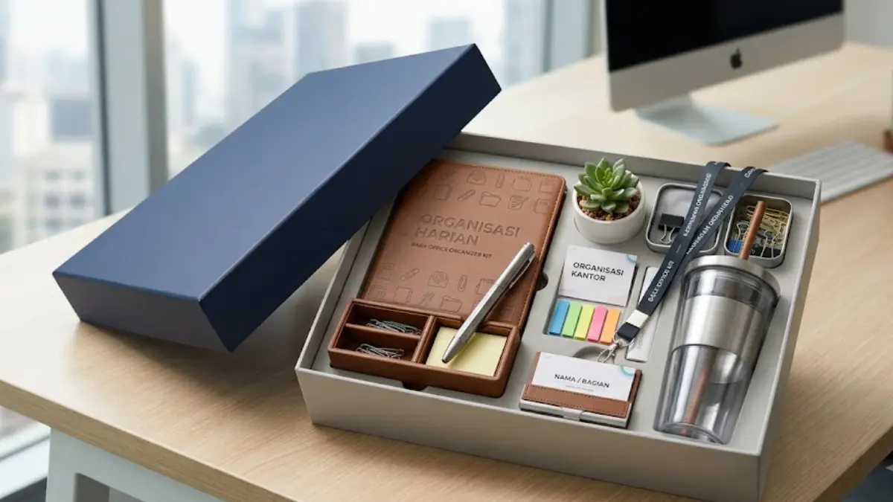

Apa yang Dimaksud dengan Daily Office Kit?
Daily office kit adalah kategori merchandise kantor yang berfokus pada barang-barang fungsional untuk mendukung aktivitas kerja sehari-hari, bukan barang bertema khusus untuk acara tertentu.
Paket ini dirancang agar setiap item di dalamnya benar-benar terpakai dalam rutinitas kerja karyawan, sehingga eksposur brand terjadi secara alami dan berkelanjutan.
Berbeda dengan merchandise bertema acara yang biasanya dipakai secara temporer, daily office kit dirancang untuk penggunaan jangka panjang di lingkungan kerja sehari-hari, baik di kantor maupun saat bekerja secara fleksibel.
Fokus utama kategori ini adalah kepraktisan dan relevansi barang dengan kebutuhan kerja, bukan sekadar tampilan yang menarik secara visual.
Konsep ini banyak digunakan perusahaan sebagai bagian dari upaya menjaga konsistensi branding internal, di mana karyawan menggunakan perlengkapan kerja yang seragam dan mencerminkan identitas perusahaan setiap hari.
Barang Apa Saja yang Biasa Termasuk dalam Daily Office Kit?
Isi daily office kit umumnya disesuaikan dengan kebutuhan kerja dasar karyawan di lingkungan kantor maupun kerja fleksibel.
Tumbler atau botol minum menjadi salah satu item inti karena kebutuhan hidrasi merupakan bagian rutin dari aktivitas kerja harian, sekaligus memberikan area cetak logo yang cukup terlihat.

Alat tulis dasar seperti pulpen dan notes kecil juga umum dimasukkan, mengingat kebutuhan mencatat masih menjadi bagian penting dari banyak aktivitas kerja, meski sebagian besar pekerjaan sudah dilakukan secara digital.
Organizer meja kerja berukuran kecil, seperti tempat alat tulis atau kabel, turut relevan dimasukkan ke dalam kit karena membantu menjaga kerapian meja kerja karyawan sekaligus memberikan fungsi tambahan yang benar-benar dipakai.
Beberapa perusahaan juga menambahkan aksesori pendukung seperti gantungan kartu identitas atau pouch kecil untuk melengkapi kit, tergantung pada kebutuhan spesifik masing-masing perusahaan dan anggaran yang tersedia.
Kapan Waktu yang Tepat Memberikan Daily Office Kit kepada Karyawan?
Waktu yang tepat untuk memberikan daily office kit umumnya disesuaikan dengan momen tertentu dalam perjalanan kerja karyawan di perusahaan.
Momen onboarding karyawan baru menjadi salah satu waktu yang paling umum, karena daily office kit dapat menjadi bagian dari kesan pertama yang membuat karyawan baru merasa disambut dengan baik sekaligus langsung memiliki perlengkapan kerja yang dibutuhkan.
Perayaan ulang tahun perusahaan atau pencapaian tertentu juga sering menjadi momen pemberian daily office kit sebagai bentuk apresiasi kepada seluruh karyawan, sekaligus memperkuat rasa kebersamaan dalam tim.
Pergantian tahun atau awal periode kerja baru turut menjadi waktu yang relevan, karena perusahaan dapat memanfaatkan momen ini untuk memberikan perlengkapan kerja baru yang mendukung produktivitas karyawan di periode berikutnya.
Selain momen-momen khusus tersebut, sebagian perusahaan juga menjadikan daily office kit sebagai bagian dari program apresiasi rutin. Misalnya diberikan kepada karyawan dengan kinerja tertentu, sehingga penggunaannya lebih personal dan bermakna dibanding pembagian secara masal tanpa alasan tertentu.
Manfaat Daily Office Kit sebagai Media Branding Perusahaan
Daily office kit memberikan manfaat branding yang cenderung lebih konsisten dibanding merchandise bertema acara, karena barang di dalamnya dipakai dalam rutinitas kerja harian yang berlangsung terus-menerus.
"Penggunaan barang secara rutin membuat eksposur logo brand terjadi berulang kali tanpa perlu usaha tambahan dari perusahaan, karena karyawan secara alami menggunakan barang tersebut selama bekerja setiap hari."
— Mega Anggun, Penulis Merchandise Kantor
Selain manfaat branding eksternal, daily office kit juga berkontribusi terhadap kenyamanan kerja karyawan, karena perlengkapan yang diberikan benar-benar mendukung aktivitas kerja mereka, bukan sekadar simbol tanpa fungsi nyata.
Konsistensi visual pada seluruh item dalam kit turut memperkuat citra profesional perusahaan, terutama ketika karyawan menggunakan perlengkapan tersebut saat bertemu klien atau bekerja di lingkungan luar kantor.

Kesimpulan
Daily office kit dalam merchandise kantor unik menawarkan pendekatan branding yang lebih fungsional dan berkelanjutan dibanding merchandise bertema acara semata, karena setiap item di dalamnya benar-benar dipakai dalam rutinitas kerja harian karyawan.
Pemberian kit ini pada momen yang tepat, seperti onboarding karyawan baru atau perayaan pencapaian perusahaan, dapat memperkuat kesan positif sekaligus mendukung kenyamanan kerja karyawan secara nyata.